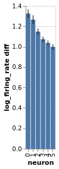

Neurons example, pt. 1¶
Generate some data¶
import altair as alt
import numpy as np
from bayes_window import models, fake_spikes_explore, BayesWindow, BayesRegression, LMERegression
from bayes_window.generative_models import generate_fake_spikes
alt.data_transformers.disable_max_rows()
try:
alt.renderers.enable('altair_saver', fmts=['png'])
except Exception:
pass
df, df_monster, index_cols, firing_rates = generate_fake_spikes(n_trials=20,
n_neurons=6,
n_mice=3,
dur=5,
mouse_response_slope=40,
overall_stim_response_strength=5)
Exploratory plot without any fitting¶
Three mice, five neurons each. Mouse #0/neuron #4 has the least effect, mouse #2/neuron #0 the most
charts = fake_spikes_explore(df=df, df_monster=df_monster, index_cols=index_cols)
[chart.display() for chart in charts];
#fig_mice, fig_select, fig_neurons, fig_trials, fig_isi + fig_overlay, bar, box, fig_raster, bar_combined

Estimate with neuron as condition¶
ISI¶
df['log_isi'] = np.log10(df['isi'])
bw = BayesWindow(df_monster, y='isi', treatment='stim', condition=['neuron', 'mouse'], group='mouse')
bw.plot(x='neuron', color='stim', detail='i_trial', add_box=False).facet(column='mouse', )
bw = BayesWindow(df=df, y='isi', treatment='stim', condition=['neuron', 'mouse'], group='mouse')
bw.plot(x='neuron', add_box=True).facet(row='mouse', column='stim')
Vanilla regression¶
bw = BayesRegression(df=df, y='isi', treatment='stim', condition=['neuron_x_mouse'], group='mouse', detail='i_trial')
bw.fit(model=(models.model_hierarchical),
do_make_change='divide',
dist_y='normal',
)
bw.chart
2021-11-25 00:49:34.852136: E external/org_tensorflow/tensorflow/stream_executor/cuda/cuda_driver.cc:271] failed call to cuInit: CUDA_ERROR_COMPAT_NOT_SUPPORTED_ON_DEVICE: forward compatibility was attempted on non supported HW
2021-11-25 00:49:34.852268: E external/org_tensorflow/tensorflow/stream_executor/cuda/cuda_diagnostics.cc:313] kernel version 450.142.0 does not match DSO version 450.156.0 -- cannot find working devices in this configuration
n(Divergences) = 1
GLM¶
(\(y\sim Gamma(\theta)\))
bw = BayesRegression(df=df, y='isi', treatment='stim', condition=['neuron', 'mouse'], group='mouse', detail='i_trial')
bw.fit(model=models.model_hierarchical,
do_make_change='subtract',
dist_y='gamma',
add_group_intercept=True,
add_group_slope=True,
fold_change_index_cols=('stim', 'mouse', 'neuron', 'neuron_x_mouse', 'i_trial'))
bw.plot(x='neuron', color='mouse', independent_axes=True, finalize=True)
bw.facet(column='mouse', width=200, height=200).display()
n(Divergences) = 1
import altair as alt
slopes = bw.trace.posterior['slope_per_group'].mean(['chain', 'draw']).to_dataframe().reset_index()
chart_slopes = alt.Chart(slopes).mark_bar().encode(
x=alt.X('mouse_:O', title='Mouse'),
y=alt.Y('slope_per_group', title='Slope')
)
chart_slopes

bw = LMERegression(df=df, y='firing_rate', treatment='stim', condition='neuron_x_mouse', group='mouse', )
#bw.fit_anova()
bw.fit()
Using formula firing_rate ~ (1|mouse) + stim| neuron_x_mouse__0 + stim|neuron_x_mouse__1 + stim|neuron_x_mouse__2 + stim|neuron_x_mouse__3 + stim|neuron_x_mouse__4 + stim|neuron_x_mouse__5 + stim|neuron_x_mouse__6 + stim|neuron_x_mouse__7 + stim|neuron_x_mouse__8 + stim|neuron_x_mouse__9 + stim|neuron_x_mouse__10 + stim|neuron_x_mouse__11 + stim|neuron_x_mouse__12 + stim|neuron_x_mouse__13 + stim|neuron_x_mouse__14 + stim|neuron_x_mouse__15 + stim|neuron_x_mouse__16 + stim|neuron_x_mouse__17
Coef. Std.Err. z P>|z| [0.025 \
Intercept 106.728 316.270 0.337 0.736 -513.150
1 | mouse 48.910 164.553 0.297 0.766 -273.608
stim | neuron_x_mouse__0 86.929 339.810 0.256 0.798 -579.086
stim | neuron_x_mouse__1 167.872 339.810 0.494 0.621 -498.144
stim | neuron_x_mouse__2 124.871 339.810 0.367 0.713 -541.144
stim | neuron_x_mouse__3 289.665 339.810 0.852 0.394 -376.350
stim | neuron_x_mouse__4 115.181 339.810 0.339 0.735 -550.835
stim | neuron_x_mouse__5 157.028 339.810 0.462 0.644 -508.987
stim | neuron_x_mouse__6 -159.325 339.810 -0.469 0.639 -825.340
stim | neuron_x_mouse__7 -205.802 339.810 -0.606 0.545 -871.818
stim | neuron_x_mouse__8 -177.574 339.810 -0.523 0.601 -843.589
stim | neuron_x_mouse__9 -191.205 339.810 -0.563 0.574 -857.220
stim | neuron_x_mouse__10 -129.423 339.810 -0.381 0.703 -795.438
stim | neuron_x_mouse__11 -135.534 339.810 -0.399 0.690 -801.549
stim | neuron_x_mouse__12 -153.550 336.526 -0.456 0.648 -813.128
stim | neuron_x_mouse__13 -153.257 336.526 -0.455 0.649 -812.836
stim | neuron_x_mouse__14 -22.789 336.526 -0.068 0.946 -682.367
stim | neuron_x_mouse__15 601.748 336.526 1.788 0.074 -57.830
stim | neuron_x_mouse__16 -6.437 336.526 -0.019 0.985 -666.015
stim | neuron_x_mouse__17 -13.975 336.526 -0.042 0.967 -673.553
Group Var 54331.941 69.811
0.975]
Intercept 726.606
1 | mouse 371.427
stim | neuron_x_mouse__0 752.944
stim | neuron_x_mouse__1 833.887
stim | neuron_x_mouse__2 790.887
stim | neuron_x_mouse__3 955.681
stim | neuron_x_mouse__4 781.196
stim | neuron_x_mouse__5 823.044
stim | neuron_x_mouse__6 506.691
stim | neuron_x_mouse__7 460.213
stim | neuron_x_mouse__8 488.441
stim | neuron_x_mouse__9 474.810
stim | neuron_x_mouse__10 536.592
stim | neuron_x_mouse__11 530.482
stim | neuron_x_mouse__12 506.029
stim | neuron_x_mouse__13 506.321
stim | neuron_x_mouse__14 636.790
stim | neuron_x_mouse__15 1261.327
stim | neuron_x_mouse__16 653.141
stim | neuron_x_mouse__17 645.604
Group Var
<bayes_window.lme.LMERegression at 0x7f12aef02220>
bw.plot(x='neuron_x_mouse:O')

Firing rate¶
bw = BayesRegression(df=df, y='firing_rate', treatment='stim', condition='neuron_x_mouse', group='mouse')
bw.fit(model=models.model_hierarchical, do_make_change='subtract',
progress_bar=False,
dist_y='student',
add_group_slope=True, add_group_intercept=False,
fold_change_index_cols=('stim', 'mouse', 'neuron', 'neuron_x_mouse'))
bw.plot(x='neuron', color='mouse', independent_axes=True, finalize=True)
bw.facet(column='mouse', width=200, height=200).display()
ANOVA may not be appropriate here: It considers every neuron. If we look hard enough, surely we’ll find a responsive neuron or two out of hundreds?
bw = LMERegression(df=df, y='firing_rate', treatment='stim', condition='neuron_x_mouse', group='mouse')
bw.fit(formula='firing_rate ~ stim+ mouse + stim*mouse + neuron_x_mouse + stim * neuron_x_mouse');
Using formula firing_rate ~ stim+ mouse + stim*mouse + neuron_x_mouse + stim * neuron_x_mouse
Coef. Std.Err. z P>|z| [0.025 0.975]
Intercept 77.712 163.910 0.474 0.635 -243.547 398.970
stim 548.607 231.804 2.367 0.018 94.278 1002.935
mouse -77.367 283.026 -0.273 0.785 -632.089 477.354
stim:mouse 1151.346 400.260 2.876 0.004 366.851 1935.841
neuron_x_mouse 23.377 44.542 0.525 0.600 -63.924 110.678
stim:neuron_x_mouse -178.392 62.992 -2.832 0.005 -301.854 -54.930
Group Var 0.001
/home/m/env_jb1/lib/python3.8/site-packages/statsmodels/regression/mixed_linear_model.py:2237: ConvergenceWarning: The MLE may be on the boundary of the parameter space.
warnings.warn(msg, ConvergenceWarning)
/home/m/env_jb1/lib/python3.8/site-packages/statsmodels/regression/mixed_linear_model.py:2261: ConvergenceWarning: The Hessian matrix at the estimated parameter values is not positive definite.
warnings.warn(msg, ConvergenceWarning)
Model quality¶
# Vanilla robust no interept or slope
bw = BayesRegression(df=df, y='isi', treatment='stim', condition=['neuron', 'mouse'], group='mouse')
bw.fit(model=(models.model_hierarchical),
do_make_change='subtract',
dist_y='student',
robust_slopes=True,
add_group_intercept=False,
add_group_slope=False,
fold_change_index_cols=('stim', 'mouse', 'neuron', 'neuron_x_mouse'))
bw.plot_model_quality()
# Vanilla robust, intercept only
bw = BayesRegression(df=df, y='isi', treatment='stim', condition=['neuron', 'mouse'], group='mouse')
bw.fit(model=(models.model_hierarchical),
do_make_change='subtract',
dist_y='student',
robust_slopes=True,
add_group_intercept=True,
add_group_slope=False,
fold_change_index_cols=('stim', 'mouse', 'neuron', 'neuron_x_mouse'))
bw.plot_model_quality()
# Vanilla robust, slopes only
bw = BayesRegression(df=df, y='isi', treatment='stim', condition=['neuron', 'mouse'], group='mouse')
bw.fit(model=(models.model_hierarchical),
do_make_change='subtract',
dist_y='student',
robust_slopes=True,
add_group_intercept=False,
add_group_slope=True,
fold_change_index_cols=('stim', 'mouse', 'neuron', 'neuron_x_mouse'))
bw.plot_model_quality()

# Vanilla robust intercept and group
bw = BayesRegression(df=df, y='isi', treatment='stim', condition=['neuron', 'mouse'], group='mouse')
bw.fit(model=(models.model_hierarchical),
do_make_change='subtract',
dist_y='student',
robust_slopes=True,
add_group_intercept=True,
add_group_slope=True,
fold_change_index_cols=('stim', 'mouse', 'neuron', 'neuron_x_mouse'))
bw.plot_model_quality()

# Gamma GLM intercept only
bw = BayesRegression(df=df, y='isi', treatment='stim', condition=['neuron', 'mouse'], group='mouse')
bw.fit(model=(models.model_hierarchical),
do_make_change='subtract',
dist_y='gamma',
robust_slopes=False,
add_group_intercept=True,
add_group_slope=False,
fold_change_index_cols=('stim', 'mouse', 'neuron', 'neuron_x_mouse'))
bw.plot_model_quality()
group slopes+ group intercepts=>divergences
LME fails¶
bw = LMERegression(df=df, y='isi', treatment='stim', condition=['neuron_x_mouse'], group='mouse', )
bw.fit(add_data=False, add_group_intercept=True, add_group_slope=False)
Using formula isi ~ (1|mouse) + stim| neuron_x_mouse__0 + stim|neuron_x_mouse__1 + stim|neuron_x_mouse__2 + stim|neuron_x_mouse__3 + stim|neuron_x_mouse__4 + stim|neuron_x_mouse__5 + stim|neuron_x_mouse__6 + stim|neuron_x_mouse__7 + stim|neuron_x_mouse__8 + stim|neuron_x_mouse__9 + stim|neuron_x_mouse__10 + stim|neuron_x_mouse__11 + stim|neuron_x_mouse__12 + stim|neuron_x_mouse__13 + stim|neuron_x_mouse__14 + stim|neuron_x_mouse__15 + stim|neuron_x_mouse__16 + stim|neuron_x_mouse__17
Coef. Std.Err. z P>|z| [0.025 0.975]
Intercept 0.080 0.014 5.798 0.000 0.053 0.107
1 | mouse -0.007 0.007 -0.975 0.329 -0.021 0.007
stim | neuron_x_mouse__0 0.004 0.002 1.873 0.061 -0.000 0.009
stim | neuron_x_mouse__1 -0.001 0.002 -0.617 0.537 -0.006 0.003
stim | neuron_x_mouse__2 -0.014 0.002 -5.848 0.000 -0.018 -0.009
stim | neuron_x_mouse__3 -0.016 0.002 -6.668 0.000 -0.020 -0.011
stim | neuron_x_mouse__4 -0.026 0.002 -10.890 0.000 -0.030 -0.021
stim | neuron_x_mouse__5 -0.031 0.002 -13.320 0.000 -0.036 -0.027
stim | neuron_x_mouse__6 0.021 0.002 9.041 0.000 0.017 0.026
stim | neuron_x_mouse__7 0.010 0.002 4.396 0.000 0.006 0.015
stim | neuron_x_mouse__8 0.003 0.002 1.380 0.168 -0.001 0.008
stim | neuron_x_mouse__9 0.002 0.002 0.776 0.438 -0.003 0.006
stim | neuron_x_mouse__10 -0.009 0.002 -3.788 0.000 -0.014 -0.004
stim | neuron_x_mouse__11 -0.013 0.002 -5.632 0.000 -0.018 -0.009
stim | neuron_x_mouse__12 0.025 0.002 10.687 0.000 0.021 0.030
stim | neuron_x_mouse__13 0.023 0.002 9.843 0.000 0.019 0.028
stim | neuron_x_mouse__14 0.009 0.002 3.705 0.000 0.004 0.013
stim | neuron_x_mouse__15 0.006 0.002 2.447 0.014 0.001 0.010
stim | neuron_x_mouse__16 -0.005 0.002 -2.269 0.023 -0.010 -0.001
stim | neuron_x_mouse__17 -0.011 0.002 -4.507 0.000 -0.015 -0.006
Group Var 0.000 0.019
/home/m/env_jb1/lib/python3.8/site-packages/statsmodels/regression/mixed_linear_model.py:2237: ConvergenceWarning: The MLE may be on the boundary of the parameter space.
warnings.warn(msg, ConvergenceWarning)
<bayes_window.lme.LMERegression at 0x7f10dcb78640>
bw.chart.display()
#bw.facet(column='mouse').display()
"Proper faceting will work when data addition is implemented in fit_lme()"
'Proper faceting will work when data addition is implemented in fit_lme()'
bw = LMERegression(df=df, y='isi', treatment='stim', condition=['neuron_x_mouse'], group='mouse', )
bw.fit(add_data=False, add_group_intercept=True, add_group_slope=True)
Using formula isi ~ (stim|mouse) + stim| neuron_x_mouse__0 + stim|neuron_x_mouse__1 + stim|neuron_x_mouse__2 + stim|neuron_x_mouse__3 + stim|neuron_x_mouse__4 + stim|neuron_x_mouse__5 + stim|neuron_x_mouse__6 + stim|neuron_x_mouse__7 + stim|neuron_x_mouse__8 + stim|neuron_x_mouse__9 + stim|neuron_x_mouse__10 + stim|neuron_x_mouse__11 + stim|neuron_x_mouse__12 + stim|neuron_x_mouse__13 + stim|neuron_x_mouse__14 + stim|neuron_x_mouse__15 + stim|neuron_x_mouse__16 + stim|neuron_x_mouse__17
Coef. Std.Err. z P>|z| [0.025 0.975]
Intercept 0.075 0.010 7.736 0.000 0.056 0.094
stim | mouse -0.007 0.007 -0.975 0.329 -0.021 0.007
stim | neuron_x_mouse__0 0.002 0.003 0.734 0.463 -0.004 0.009
stim | neuron_x_mouse__1 -0.004 0.003 -1.104 0.270 -0.010 0.003
stim | neuron_x_mouse__2 -0.016 0.003 -4.966 0.000 -0.022 -0.010
stim | neuron_x_mouse__3 -0.018 0.003 -5.572 0.000 -0.024 -0.012
stim | neuron_x_mouse__4 -0.028 0.003 -8.688 0.000 -0.034 -0.022
stim | neuron_x_mouse__5 -0.033 0.003 -10.482 0.000 -0.040 -0.027
stim | neuron_x_mouse__6 0.026 0.006 4.704 0.000 0.015 0.037
stim | neuron_x_mouse__7 0.015 0.006 2.744 0.006 0.004 0.026
stim | neuron_x_mouse__8 0.008 0.006 1.472 0.141 -0.003 0.019
stim | neuron_x_mouse__9 0.007 0.006 1.217 0.224 -0.004 0.018
stim | neuron_x_mouse__10 -0.004 0.006 -0.708 0.479 -0.015 0.007
stim | neuron_x_mouse__11 -0.008 0.006 -1.486 0.137 -0.019 0.003
stim | neuron_x_mouse__12 0.023 0.003 7.381 0.000 0.017 0.029
stim | neuron_x_mouse__13 0.021 0.003 6.746 0.000 0.015 0.027
stim | neuron_x_mouse__14 0.007 0.003 2.127 0.033 0.001 0.013
stim | neuron_x_mouse__15 0.004 0.003 1.180 0.238 -0.002 0.010
stim | neuron_x_mouse__16 -0.007 0.003 -2.369 0.018 -0.014 -0.001
stim | neuron_x_mouse__17 -0.013 0.003 -4.053 0.000 -0.019 -0.007
Group Var 0.000 0.019
/home/m/env_jb1/lib/python3.8/site-packages/statsmodels/regression/mixed_linear_model.py:2237: ConvergenceWarning: The MLE may be on the boundary of the parameter space.
warnings.warn(msg, ConvergenceWarning)
<bayes_window.lme.LMERegression at 0x7f10dcb7ec10>
bw.chart

Need nested design, but get singular matrix:
bw = LMERegression(df=df, y='isi', treatment='stim', condition=['neuron_x_mouse'], group='mouse', )
try:
bw.fit(add_data=False, add_group_intercept=True, add_group_slope=True, add_nested_group=True)
except Exception as e:
print(e)
Using formula isi ~ (stim|mouse) + stim| neuron_x_mouse__0:mouse + stim|neuron_x_mouse__1:mouse + stim|neuron_x_mouse__2:mouse + stim|neuron_x_mouse__3:mouse + stim|neuron_x_mouse__4:mouse + stim|neuron_x_mouse__5:mouse + stim|neuron_x_mouse__6:mouse + stim|neuron_x_mouse__7:mouse + stim|neuron_x_mouse__8:mouse + stim|neuron_x_mouse__9:mouse + stim|neuron_x_mouse__10:mouse + stim|neuron_x_mouse__11:mouse + stim|neuron_x_mouse__12:mouse + stim|neuron_x_mouse__13:mouse + stim|neuron_x_mouse__14:mouse + stim|neuron_x_mouse__15:mouse + stim|neuron_x_mouse__16:mouse + stim|neuron_x_mouse__17:mouse
Singular matrix